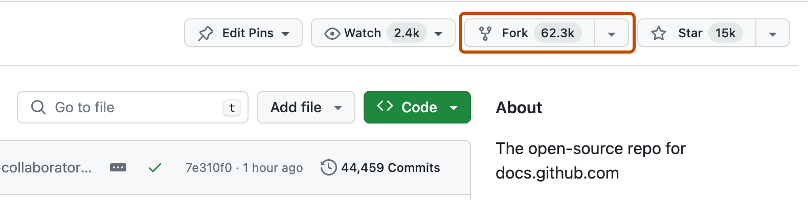
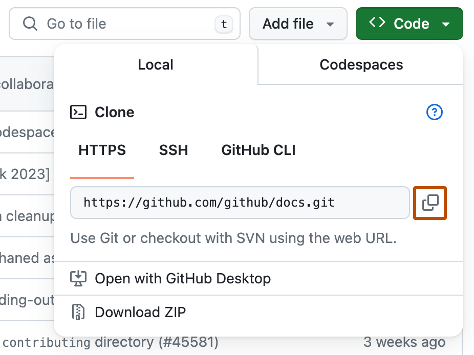

Passer à la pratique
Ton projet.
Sur ton ordinateur.
Créer ton compte GitHub, faire une copie du projet sur ton compte, puis récupérer les fichiers et l’historique sur ton ordinateur.
Tu vas aussi découvrir la CLI, sans avoir besoin de tout apprendre d’un coup.
Avant de commencer
Un compte, un navigateur et Git.
Cette page te guide jusqu’à une copie du projet sur ton ordinateur. Tu ne modifies aucun fichier de l’application et tu n’as pas encore besoin d’Android Studio.
- Pour créer le compte et le fork : un navigateur, Internet et un accès à ta boîte email.
- Pour le clone : Git installé sur ton ordinateur avec l’aide de ton encadrant.
Préparation avec l’encadrant
Sous Windows, préparer Git pour Windows, qui fournit Git Bash. Utiliser le navigateur pour le compte et la copie en ligne. Sur macOS, on peut utiliser Terminal avec Git déjà installé ; les commandes montrées ici sont les mêmes.
Vérifier les conditions de création du compte GitHub avec le jeune et l’établissement avant la séance. Ne pas utiliser le compte ou les identifiants de l’encadrant à sa place.
01 / Sur GitHub
Créer ton compte.
- Ouvre la page de création de compte GitHub. Si tu as déjà ton compte personnel, connecte-toi simplement.
- Choisis un compte gratuit, un nom d’utilisateur et suis les étapes proposées par GitHub. Un pseudo suffit ; évite d’y mettre des informations personnelles inutiles.
- Vérifie ton adresse email en suivant le message envoyé par GitHub.
- Ouvre le menu de ton profil et retrouve ton nom d’utilisateur. Il servira dans l’adresse de ton projet.
Le mot de passe et les éventuels codes de connexion restent sur GitHub. Ce cours ne te les demande jamais.
Je vérifie : je suis connecté à mon propre compte et mon email est vérifié.
02 / Une copie sur ton compte
Faire ton fork du projet Android.
Un fork crée une copie du dépôt dans ton compte GitHub. Il ne télécharge pas encore le projet sur ton ordinateur.
- Ouvre le dépôt d’origine : marcpicone / stage_academy.
- Repère le propriétaire
marcpicone, le nomstage_academy, le fichier README et la branchedev. - Clique sur Fork en haut du dépôt.
- Dans Owner (propriétaire), choisis ton compte. Garde le nom
stage_academy. Copier seulement la branche par défaut suffit pour ce cours : elle s’appelledev. - Clique sur Create fork (créer le fork).
- Vérifie que l’adresse commence par
github.com/TON_PSEUDO/stage_academyet que le lien « forked from marcpicone/stage_academy » indique le projet d’origine.

stage_academy ; les noms et les compteurs peuvent être différents.Le dépôt d’origine est public : ton fork sera public lui aussi. N’ajoute pas de mot de passe ou d’information personnelle dans ses fichiers.
Je vérifie : le propriétaire du fork est mon compte, et le lien vers le dépôt d’origine est visible.
03 / Une petite découverte
La CLI : écrire une instruction, lire une réponse.
CLI signifie Command-Line Interface : interface en ligne de commande. On écrit une instruction dans un terminal et l’ordinateur affiche sa réponse.
Git possède aussi des interfaces graphiques avec des boutons. La ligne de commande est une autre façon d’utiliser le même outil ; tu n’as pas à tout mémoriser.
- Sous Windows, ouvre Git Bash. Sur macOS, ouvre Terminal avec Git installé.
- Écris la commande ci-dessous, puis appuie sur Entrée.
git --versionExemple de réponse, le numéro peut changer
git version 2.x.ygit désigne l’outil. --version lui demande d’afficher sa version. Tu écris la commande, pas la réponse. Si tu vois un symbole $ ou > au début d’une ligne d’exemple, c’est souvent l’invite du terminal : ne le recopie pas.
Essayer dans un petit terminal d’entraînement
Cette simulation reconnaît seulement git --version et pwd. Elle n’exécute rien sur ton ordinateur.
Je vérifie : le vrai terminal affiche une version de Git. S’il dit « command not found » ou « git n’est pas reconnu », je m’arrête et je demande à l’encadrant de vérifier l’installation.
04 / Une copie sur ton ordinateur
Cloner ton fork, une seule fois.
Un clone télécharge les fichiers et l’historique dans un dossier local. On clone ton fork, et non directement le dépôt de Marc.
1. Retrouver la bonne adresse
Sur ton fork, clique sur Code → HTTPS et copie l’adresse qui se termine par .git. Vérifie ton nom d’utilisateur au début de l’adresse.

TON_PSEUDO/stage_academy.git. On utilise HTTPS ; pas l’onglet GitHub CLI, qui correspond à un autre outil.2. Choisir le dossier parent
Avec l’encadrant, choisis un dossier de travail, par exemple Documents/Stage. Sous Windows, ouvre ce dossier dans l’Explorateur, puis utilise le menu contextuel Open Git Bash here (« ouvrir Git Bash ici » ; il peut être dans « Afficher plus d’options »). Sur macOS, place le terminal dans ce dossier avec l’aide de l’encadrant.
pwdpwd affiche le dossier où tu te trouves. Vérifie le chemin avant de continuer. N’ouvre pas le terminal à l’intérieur d’un autre projet Git. Le clone créera lui-même le sous-dossier stage_academy.
3. Adapter la commande à ton compte
Tu peux remplacer TON_PSEUDO à la main dans la commande. L’aide ci-dessous fait uniquement cette substitution ; elle ne vérifie pas ton compte et ne lance pas Git.
Remplace TON_PSEUDO par ton nom d’utilisateur avant d’exécuter la commande.
git clone --branch dev https://github.com/TON_PSEUDO/stage_academy.gitclone demande une copie locale. --branch dev choisit la branche dev à l’ouverture. L’adresse indique le dépôt à récupérer.
Exécute la commande dans le vrai terminal, puis attends que l’invite réapparaisse. Tu peux voir « Cloning into… » (« copie dans… ») et des compteurs de téléchargement. Ce dépôt étant public, le clone HTTPS ne devrait pas demander ton mot de passe GitHub.
4. Entrer dans le dossier créé
cd stage_academycd signifie change directory : changer de dossier. Tu te places maintenant dans le projet, sans modifier ses fichiers.
Je vérifie : le dossier stage_academy contient les fichiers du projet. Je n’ai pas seulement téléchargé un ZIP : le clone contient aussi l’historique Git.
05 / Lire le résultat
Trois vérifications, sans rien modifier.
À exécuter dans le dossier stage_academy. Ces trois commandes lisent des informations : elles ne créent ni commit, ni push.
Sur quelle branche suis-je ?
git statusCherche On branch dev (« sur la branche dev ») et nothing to commit, working tree clean (« aucun changement à enregistrer »). Le message exact peut varier selon la langue et la version.
Quel historique ai-je récupéré ?
git --no-pager log --oneline -5log affiche l’historique ; --oneline résume chaque commit sur une ligne ; -5 limite aux cinq derniers ; --no-pager évite d’ouvrir une visionneuse séparée. Cherche le message initial [Initial] Initial commit. S’il n’apparaît pas dans les cinq dernières lignes, l’historique contient simplement davantage d’étapes : avec l’encadrant, augmente le nombre affiché. Le nombre de commits peut évoluer.
À quel dépôt GitHub ma copie est-elle reliée ?
git remote -vForme attendue — exemple à comparer, pas à exécuter
origin https://github.com/TON_PSEUDO/stage_academy.git (fetch) origin https://github.com/TON_PSEUDO/stage_academy.git (push)
origin est le nom habituel donné au dépôt distant lors du clone. Vérifie que l’adresse vise ton fork. Les mentions fetch (« récupérer ») et push (« envoyer ») décrivent les usages de ces adresses ; cette commande n’effectue aucun envoi.
Si quelque chose bloque
Lire le message avant de recommencer.
« Repository not found » — dépôt introuvable
Ouvre l’adresse du fork dans le navigateur. Vérifie le pseudo, le nom stage_academy et que le fork a bien été créé. Ne relance pas la commande avec une adresse choisie au hasard.
« Destination path … already exists » — le dossier existe déjà
Le projet a peut-être déjà été cloné. Ne supprime rien. Vérifie son contenu et demande à l’encadrant s’il faut entrer dedans avec cd stage_academy ou choisir un autre dossier parent.
« Not a git repository » — ce n’est pas un dépôt Git
Tu es peut-être dans le dossier parent. Affiche le dossier courant avec pwd, puis entre dans le clone avec cd stage_academy. Un ZIP téléchargé ne remplace pas un clone Git.
« Remote branch dev not found » — branche dev introuvable
Vérifie la branche disponible sur ton fork avec l’encadrant. Le cours attend dev ; si le projet a changé, adapte la commande avec son aide.
Une connexion, un mot de passe ou une erreur réseau est demandé
Vérifie que l’URL utilise HTTPS et pointe sur le bon dépôt public. Demande à l’encadrant de vérifier l’accès. Ne colle pas de mot de passe ou de jeton dans le cours ou une commande partagée.
Mon bilan
Ces cases sont tes confirmations personnelles. Le cours ne contrôle ni GitHub ni les fichiers de ton ordinateur, et ne sauvegarde pas ces réponses.
Vérifie ces quatre points avec ton encadrant.
Prochaine étape : découvrir ce qu’est un IDE, l’outil dans lequel on ouvrira et fera évoluer le projet. Pas de modification, de commit ou de push à faire dans cette page.